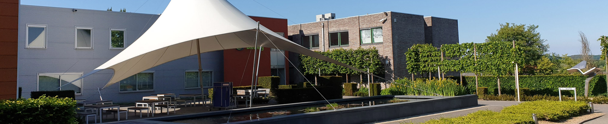

Meeldijk Advocaten
Wat wij leveren
Bewezen succes
Het Kantoor
Bewezen succes in Incasso, Belgisch en Internationaal Handelsrecht, Insolventie en –faillissementsrecht, Beslagrecht, Aansprakelijkheidsrecht, Internationaal Transportrecht, Handelsagentuur en Europees Mededingingsrecht
30 jaar ervaring
Incasso
Meeldijk Advocaten geeft advies over uw incassozaken en verzorgt het gehele buitengerechtelijke en gerechtelijke traject. U hoeft zich dan verder geen zorgen te maken. Bel ons vandaag nog en zie hoe we u kunnen helpen.
Gerechtigheid voor u
Schadeclaims
Meeldijk Advocaten staat u met raad en daad bij de inschatting van uw risico, de onderhandelingen met uw tegenpartij, het vastleggen van een settlement of de gerechtelijke afwikkeling van uw schadedossier.

Het kantoor
Meeldijk Advocaten bestaat sinds 1991 en is gespecialiseerd in de internationale zakelijke praktijk. Het kantoor is voornamelijk actief in volgende materies:
- Incasso
- Belgisch en Internationaal Handelsrecht
- Insolventie en –faillissementsrecht
- Beslagrecht
- Aansprakelijkheidsrecht
- Internationaal Transportrecht
- Handelsagentuur
- Europees Mededingingsrecht
Wij zijn werkzaam voor een groot aantal bedrijven en verschillende buitenlandse advocaten- en deurwaarderskantoren en kredietverzekeraars.
Wij verstrekken onze cliënten steeds duidelijke adviezen en proberen bij voorkeur preventieve maatregelen te treffen of te bemiddelen om gerechtelijke procedures zo veel mogelijk te vermijden.
Wordt u toch te geconfronteerd met een gerechtelijke procedure, dan kunnen wij u toch met raad en daad bijstaan voor alle Belgische rechtbanken, ook in het Franstalige landsgedeelte.
Ons kantoor staat garant voor een snelle en doeltreffende aanpak en een heldere kijk op de gerechtelijke procedures.
Incasso
Schadeclaims
Meeldijk Advocaten beschikt over een ruime ervaring en know-how op het gebied van behandeling van schade- en aansprakelijkheidsdossiers.
Heeft uw bedrijf schade geleden of wordt u geconfronteerd met een aansprakelijkheidsclaim, dan is een juiste inschatting van de aansprakelijkheid en de precieze omvang van de schade van het grootste belang.
Meeldijk Advocaten staat u met raad en daad bij voor de inschatting van uw risico, de onderhandelingen met uw tegenpartij, het contractueel vastleggen van een settlement of de gerechtelijke afwikkeling van uw schadedossier.